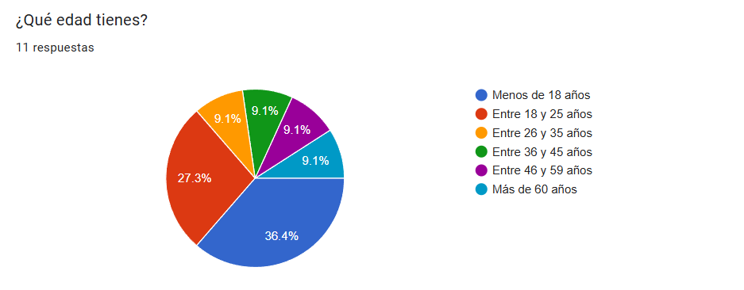
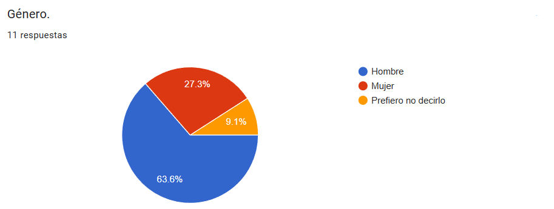
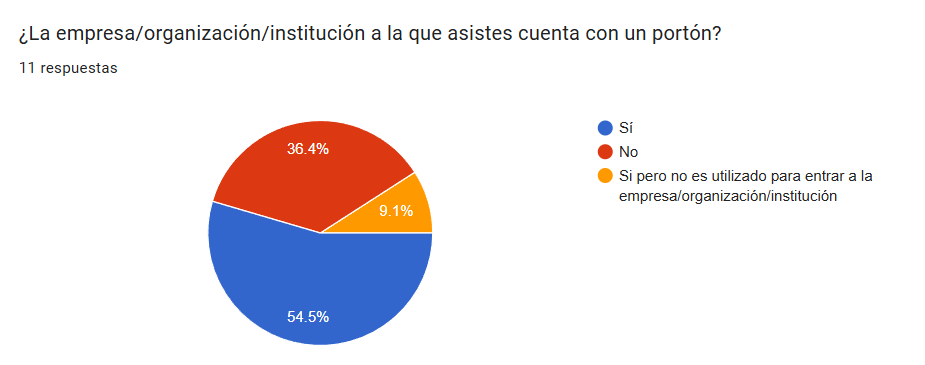
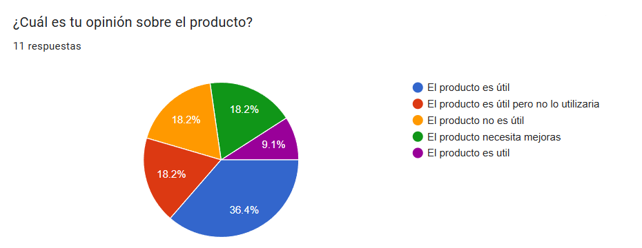

Análisis de mercado
Hicimos una encuesta para saber qué opinaba la gente sobre AccessGate. Puedes ver la encuesta haciendo clic aquí.

La encuesta realizada acerca del proyecto de tesina AccessGate fue respondida principalmente por personas jóvenes, siendo la mayoría (36.4%) menores de 18 años y un 27.3% entre 18 y 25 años. Esto indica que el público objetivo tiene un perfil mayoritariamente joven. En cuanto al género, predominan los hombres (66.3%).

Conclusión
La encuesta realizada acerca del proyecto de tesina AccessGate fue respondida principalmente por personas jóvenes, siendo la mayoría (36.4%) menores de 18 años y un 27.3% entre 18 y 25 años. Esto indica que el público objetivo tiene un perfil mayoritariamente joven. En cuanto al género, predominan los hombres (66.3%).
Respecto a la ocupación, un 36.4% estudia en el ITR3 y un 27.3% trabaja en relación de dependencia. También hay una combinación entre estudio y trabajo, lo que muestra una diversidad en la rutina de los encuestados.
Sobre la infraestructura, el 54.5% indicó que su institución/empresa posee un portón, lo que representa una mayoría leve. Esto es relevante para el contexto de uso del producto “AccessGate”.
En cuanto a la percepción del producto, el 45.5% lo considera útil, aunque también se identificaron opiniones divididas: un 18.2% piensa que no lo usaría, otro 18.2% cree que no es útil y el restante opina que necesita mejoras. Esto sugiere que, si bien hay una buena recepción inicial, aún hay espacio para mejorar el producto o comunicar mejor su utilidad.
Respecto a la disposición de pago, la mayoría (45.5%) estaría dispuesta a pagar entre 50 y 99 dólares, mientras que el resto se divide entre montos menores y mayores. Esto puede orientar el precio del producto dentro de ese rango intermedio.
Finalmente, la gran mayoría (90.9%) no conoce un producto similar, lo que representa una oportunidad de innovación y posicionamiento en el mercado. Sin embargo, la intención de adopción por parte de instituciones con portones aún no es alta, ya que solo un 9.1% votó afirmativamente y un 54.5% respondió “tal vez”.
Gráficas
Preguntas sobre los encuestados
Edad
Género
¿La empresa/organización/institución a la que asistes cuenta con un portón?
Preguntas sobre AccessGate
Opinión sobre el producto
Precio